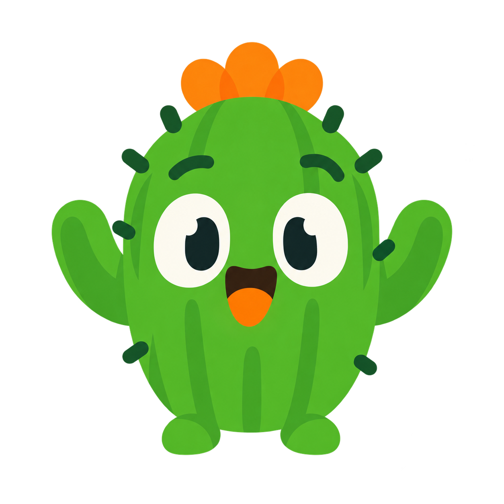

♪♫

Oi, eu sou o Tom!A música floresce em você.
Aprenda música ouvindo, brincando e praticando. No seu ritmo, uma descoberta de cada vez.
Versão de testes • O acesso de aluno ainda não está disponível.

Oi, eu sou o Tom!Aprenda música ouvindo, brincando e praticando. No seu ritmo, uma descoberta de cada vez.
Versão de testes • O acesso de aluno ainda não está disponível.